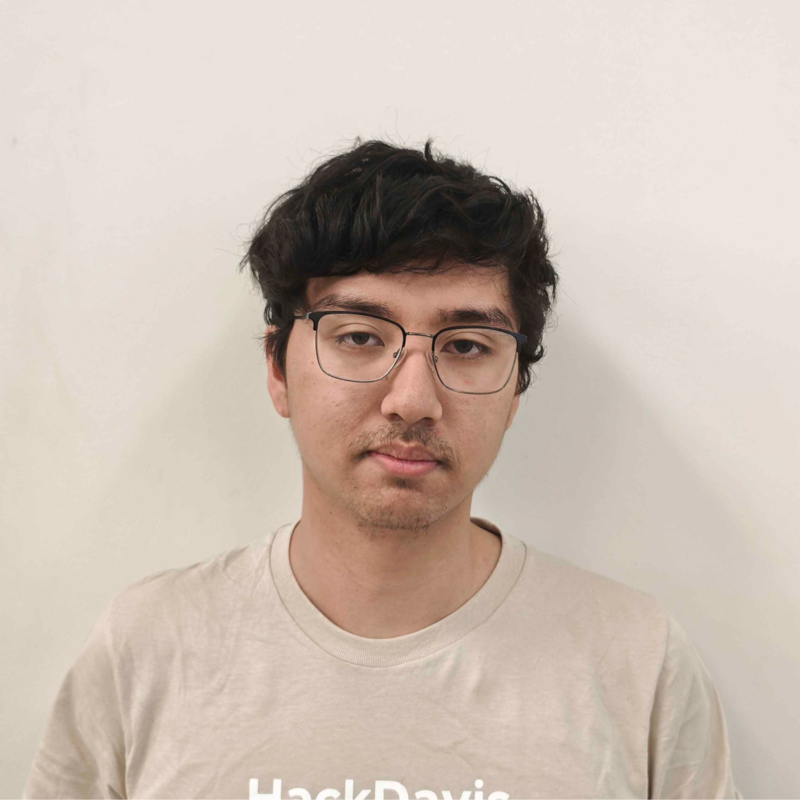
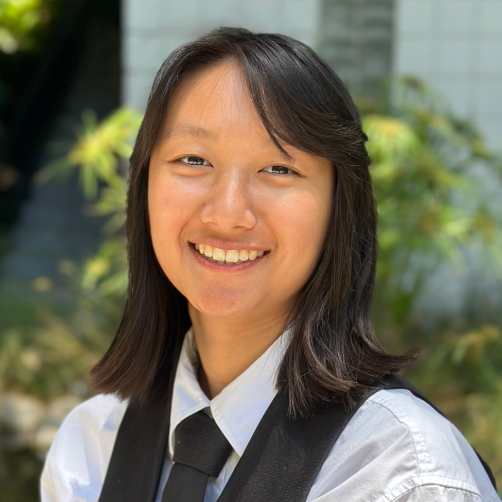
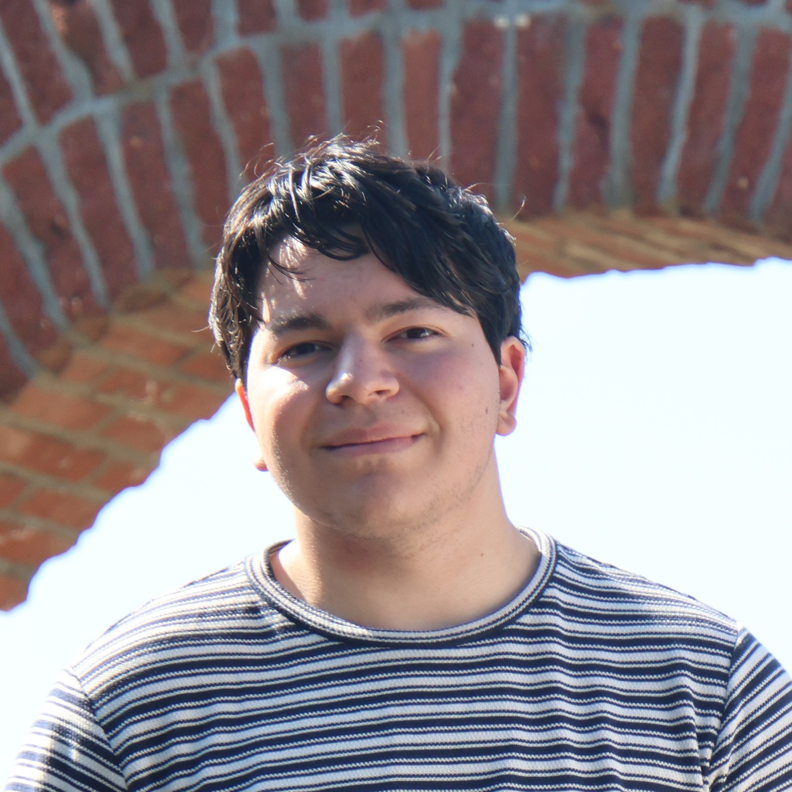
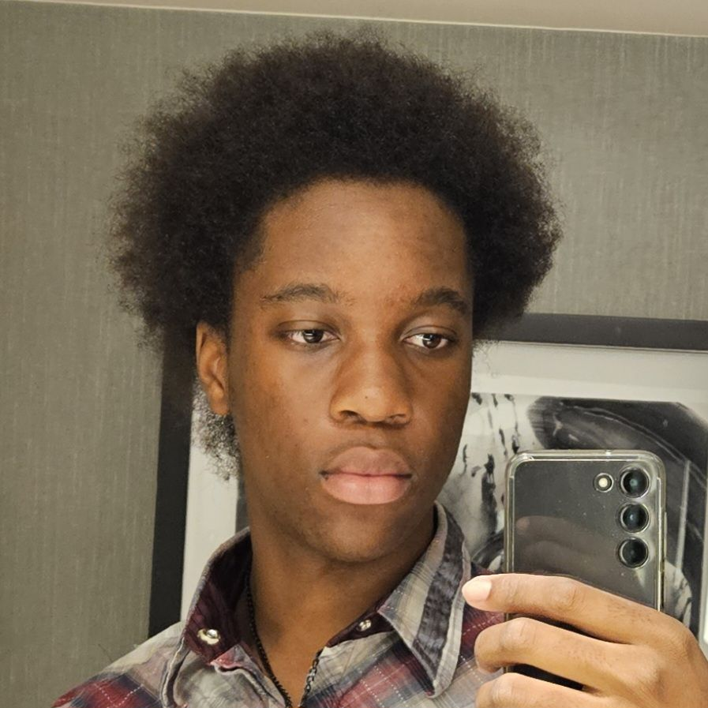

About Us
Anteater Linux User Group at UC Irvine (ALUG@UCI) is a student organization dedicated to bringing users of Linux and open source software together on campus. We welcome everyone at UCI of all backgrounds and experience levels to join us in learning, sharing, and collaborating on all things Linux!
Meet the Team
Founder & President

Name
Chris Rios
Major
Computer Science B.S.
Preferred Distro
CachyOS
Device(s)
System76 Adder WS, Steam Deck, and Macbook Air M4
Fun Fact
I was born left-handed, but raised right-handed
Vice-President & Event Coordinator
Name
Kasra Moayedi
Major
Computer Science and Engineering B.S.
Preferred Distro
Artix Linux
Device(s)
PC & Thinkpad
Fun Fact
I know 6 different programming languages!
Secretary
Name
Cole Saldanha
Major
Computer Science B.S.
Preferred Distro
Debian
Device(s)
Acer Swift Go 14
Fun Fact
Accidentally ran “rm -rf” on my home directory during my first year of linux 🙁
Treasurer

Name
Ashley Pock
Major
Computer Science and Engineering B.S.
Preferred Distro
Ubuntu (WSL)
Device(s)
Thinkpad & Netbook
Fun Fact
I enjoy learning about the stock market
Public Relations

Name
Jonas Smith
Major
Material Science and Engineering B.S.
Preferred Distro
None in particular
Device(s)
Thinkpad with Lubuntu & MSI with Fedora
Fun Fact
I like to cook in my free time and I really like cooking chicken
Public Relations

Name
Ikechi Ezekwe
Major
Electrical Engineering, B.S.
Preferred Distro
Arch Linux
Device(s)
Thinkpad X1 Nano Gen 1 with Arch Linux (Sway as my WM)
Fun Fact
I’m a huge rhythm gamer with my favorite being sound voltex (｡•̀ᴗ-)✧